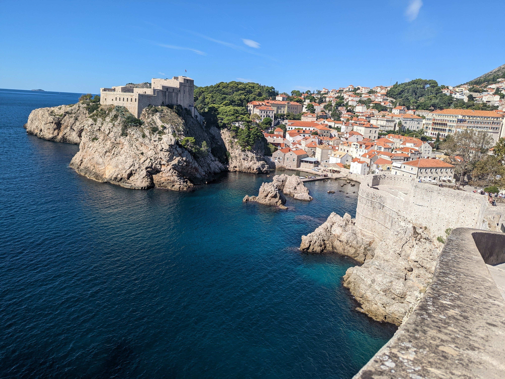
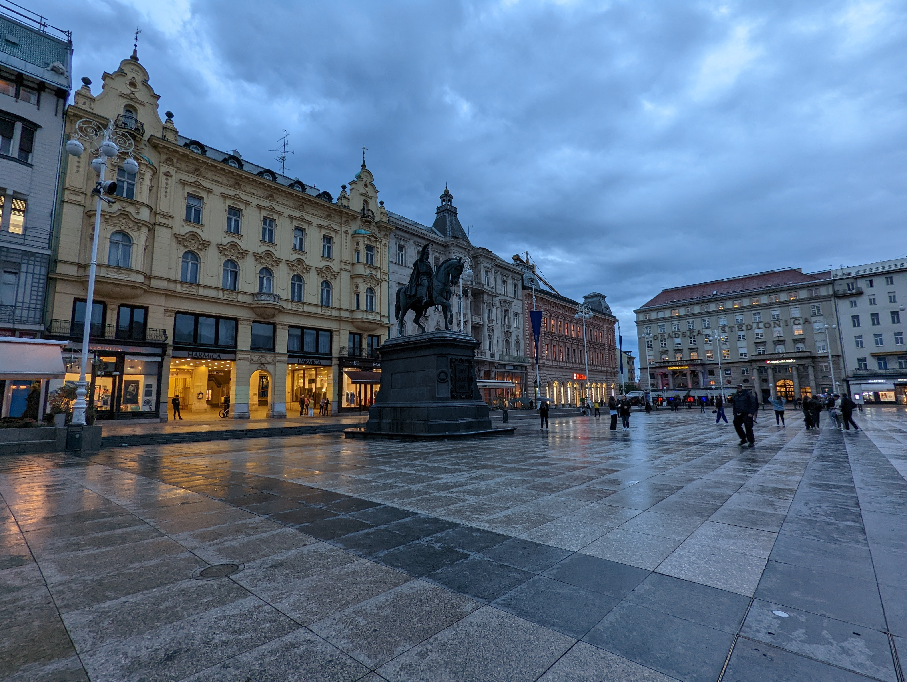
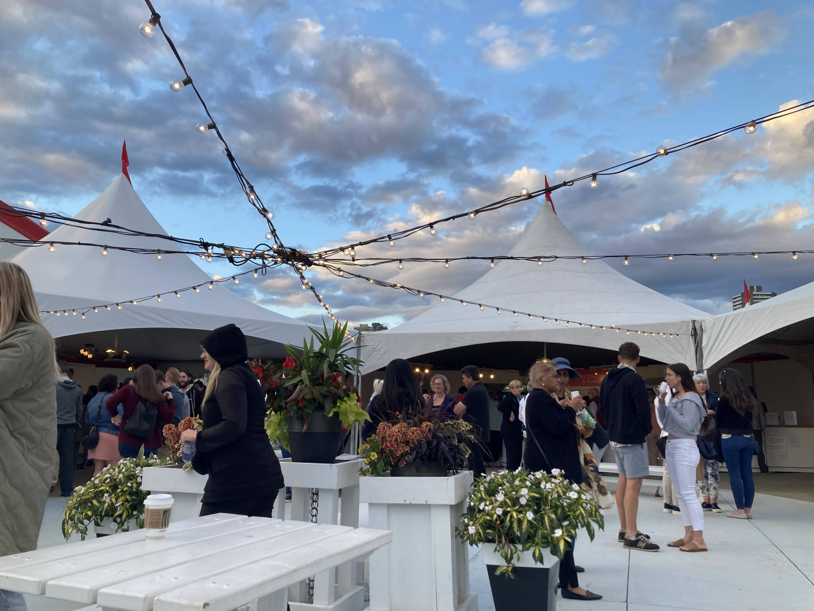
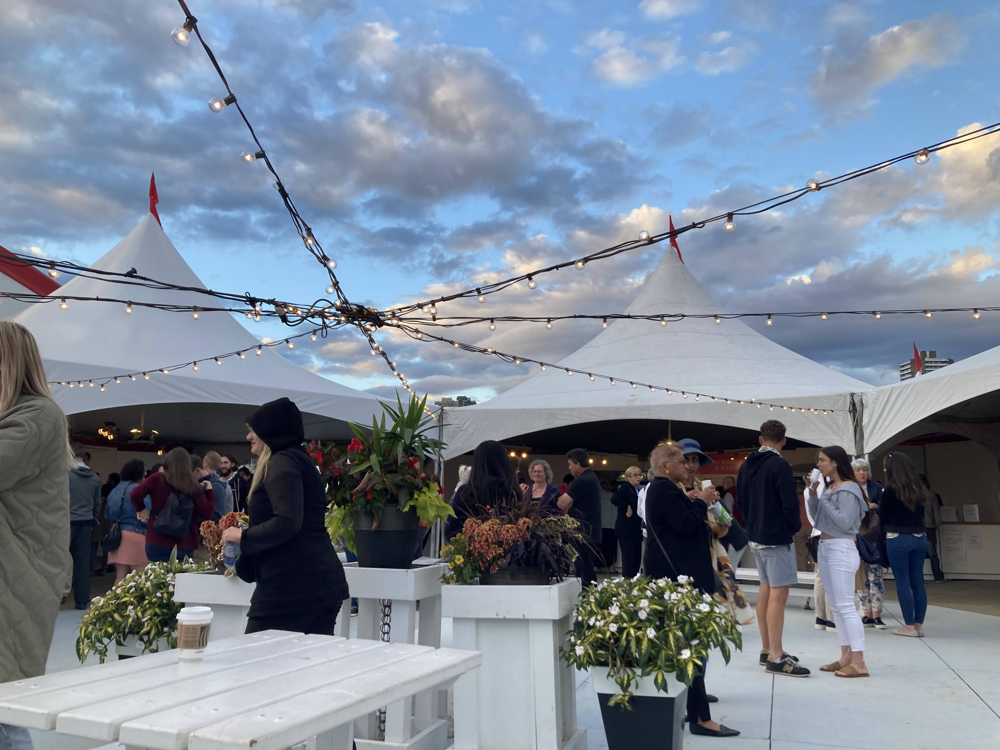
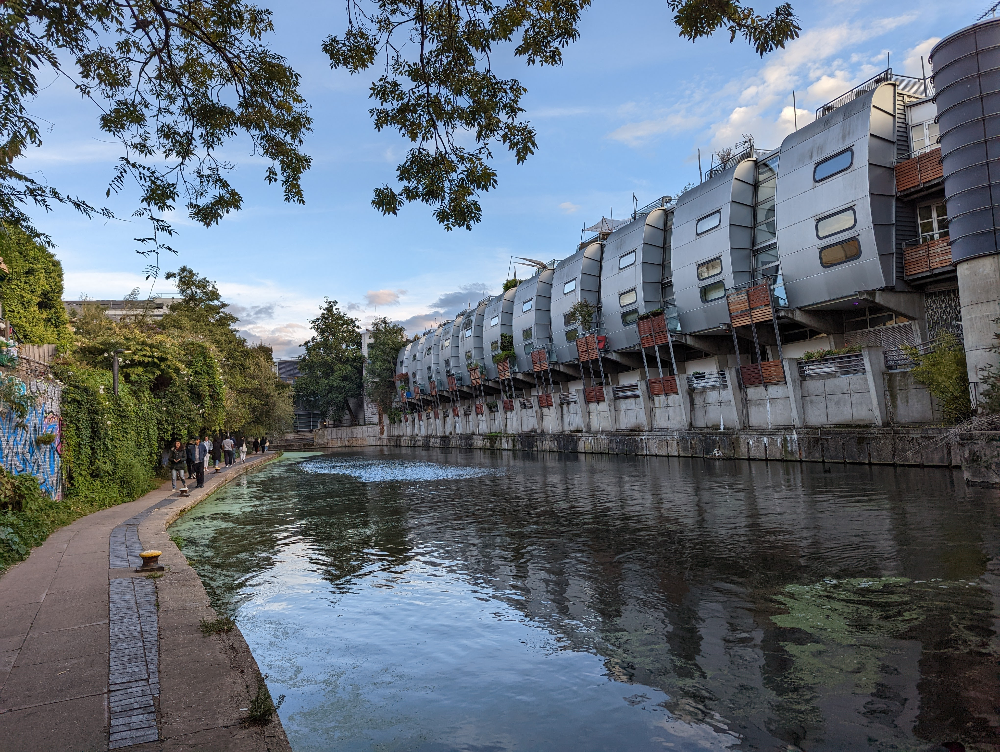

October 2, 2022


Dubrovnik
Dubrovnik was the more expensive of the Croatian coastal towns
and definitely the one with the most touristy vibe. The hotel
we stayed in was also the 4-star-iest of all. The view was excellent
and we did watch an old-timey merchant ship replica sail off
into the sunset. We were assured by the locals that the water would
be a freezing 25 degrees Celcius due to it being October. As stoic
Vancouverites, we went in anyway and it was refreshing.
September 28, 2022


Split
Split felt like a rougher town. Lot's of graffity and trash in the streets.
We did a walking tour of the Old Town as we did in every city we could, hosted
by Free Spirit Walking Tours. Our guide Tina was excellent and very forgiving
of our tardiness (we were 10-15 minutes late eek!). She informed us that the best way
to prevent your business or home form being vandalized was to paint a mural of
the local soccer team. It was like a religion and if any one vandalized that mural
they would (allegedly) be in for a beating... Overall it feels a good mix of trendy and traditional and I'd recommend it to anyone looking for relatively safe and affordable place to explore and meet people.
We still have 8 more days in Croatia where we will slowly be driving down the coast so I'll keep you all updated! 8/10
September 23, 2022
 

London
London visits were a key childhood memory. I regualrly visited and stayed with my grandparents in Camden Town up until about 2018 when they moved
out to East Finchley to get away from the traffic and noise. It's very nice to be back a spending time with my mum and Grandad. This time my
partner has joined and we are heading to Croatia together after this.
This is my partner's first time really exploring London so naturally he wanted to hit the touristy spots such as Buckingham Palace, Tower Bridge, London Eye etc while walking along the Thames.
These places are, of course, crushingly busy and mostly consist of looking at, admiring or walking by cool looking stuff with throngs off others trying to do the same.
May 18, 2022


Juan de Fuca
A grueling trip.
We brough home a 10 lb rock.
But it only rained 1% as much as forcasted!
May 14, 2022


Camden
Walking around Camden (pictured), East Finchley, Borough Market and the RAF Museum in Edgeware on the otherhand was very quiet and pleasent (not including Camden Market on the quiet front
but a fun stop to check out!). Camden is very nostalgic, East Finchley is a quiet but interesting suburb, Borough Market is a new. hip food and wares semi-open roofed market worth
seeing. The RAF Museum was a nice break on a rainy day and AWESOME if you like planes (free entry, starting from WW1 to present). 10/10
May 12, 2020


Mt. Assiniboine
Whew
Boy did beer tast good after that
Worth it for the views
Still in recovery
... How many lines before it's a poem